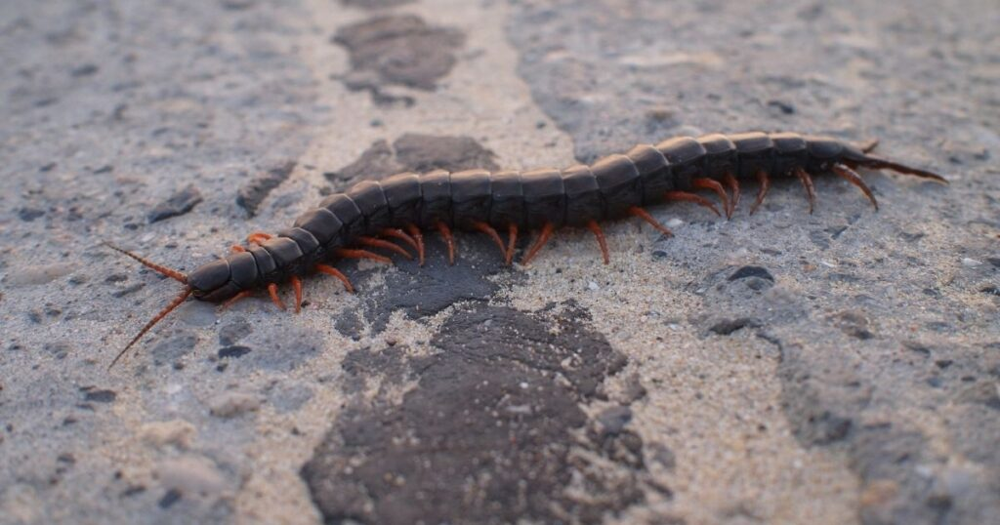
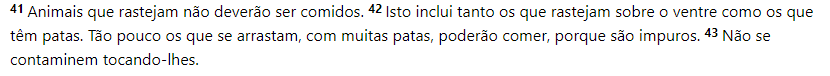

Odeio lacraias

Filha da puta a cima
- bicho amaldiçoado renascido do inferno
- nojenta pra cacete
- Ambiente úmido: Elas costumam se esconder em locais úmidos e escuros, como embaixo de pedras ou folhas, o que pode ser desagradável.
- Elas mexem no seu pé como se não fossem nada
- vivem na sua casa sem pagar aluguel

explicação biblica do porque as lacrais são tão ruins
Por mais que fique subtentido no texto, o significado de impuro pode variar, porém uma coisa se mantém sempre dentro do significado de impuro, e essa coisa são as lacraias